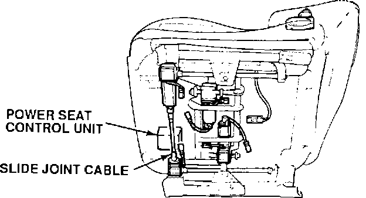

Seat Memory Beeps or Fails to Recall Position
YEAR1991-92
MODEL
LEGEND
VIN APPLICATION
See VEHICLES AFFECTED
June 29, 1992
BULLETIN NO.
92-016
Seat Memory Beeps or Fails to Recall
SYMPTOMS
When a seat position is recalled:
1. The seat memory beeps twenty times.
2. The seat does not move, or moves to the wrong position.
PROBABLE CAUSE
The number of pulses required to recall the seat position exceeded the control unit's memory capacity, causing it to lose the memorized position.
VEHICLES AFFECTED
1991:
All
1992 Sedan: thru VIN JH4KA7 . . . NC020994
1992 Coupe: thru VIN JH4KA8 . . . NC002652
CORRECTIVE ACTION
Replace the power seat control unit with the appropriate updated unit listed under PARTS INFORMATION.

1. Move the seat backward. Remove the front seat track covers and mounting bolts.
2. Move the seat forward. Remove the rear seat track covers and mounting bolts.
3. Lift the front of the seat and support it with a 10 in. long piece of wood.
4. Remove the two mounting screws and the front cover.
5. Remove the slide joint cable.
6. Remove the four mounting bolts for the control unit. Disconnect the three electrical connectors and remove the control unit.
7. Connect the electrical connectors to the new control unit. Mount the control unit with the original bolts, tighten them securely.
8. Reinstall the slide joint cable and the front cover.
9. Install the four seat track mounting bolts, tighten them to 35 N-m (3.4 kg-m, 25 lb.ft.). Install the seat track covers.
10. Move the seat bottom and seat-back through their full ranges to make sure they do not bind.
PARTS INFORMATION
Power seat control unit:
Sedan 81228-SP0-H01RM
SCoupe 81228-SP1-H01RM
WARRANTY CLAIM INFORMATION
In warranty:
The normal warranty applies.
Out of warranty:
Any repair performed after warranty expiration may be eligible for goodwill consideration by the District Service Manager. You must request consideration, and get the DSM's decision, before starling work.
Operation number
749140
Flat rate time:
0.7 hr.
Failed P/N:
81228-SP0-003
Defect code:
Beeps 20 times:
066
Fails to recall:
072
Contention code:
B01